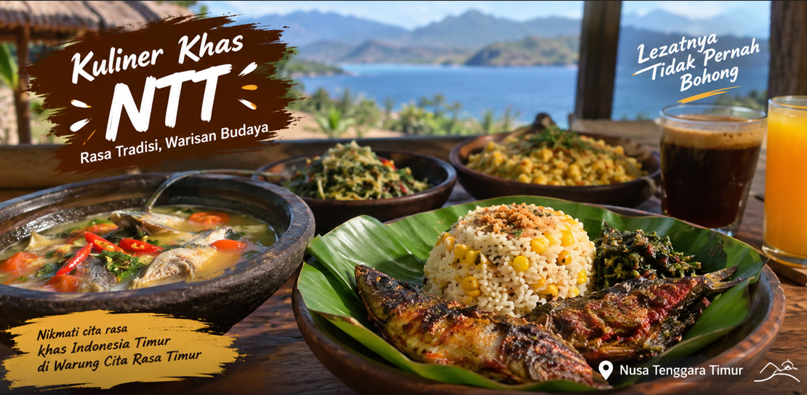

Mari katong nikmati makanan khas Nusa Tenggara Timur yang penuh rasa dan bikin sonde mau berhenti makan.
| No | Menu | Kategori | Harga |
|---|---|---|---|
| 1 | Ikan Kuah Asam | Makanan | $30.000 |
| 2 | Nasi Kolo | Makanan | $25.000 |
| 3 | Jagung Bose | Makanan | $20.000 |
| 4 | Nasi Jagung Ikan Bakar | Makanan | $25.000 |
| 5 | Kopi Flores | Minuman | $5.000 |
| 6 | Es Teh | Minuman | $7.000 |
| 7 | Es Jeruk | Minuman | $8.000 |
Son perlu bingung, pesan makanan di sini gampang sa!
Warung Cita Rasa Timur menyediakan berbagai makanan dan minuman khas Indonesia Timur.
Kami menyajikan makanan dengan cita rasa khas, harga terjangkau, dan pelayanan yang ramah.
Katong hadir membawa cita rasa khas NTT dengan harga bersahabat. Mari makan bersama dan rasakan nikmatnya makanan khas Timur.
Beberapa makanan dan pemandangan khas NTT.

Warung Cita Rasa Timur
📍 Jl. Merdeka No. 25, Kupang, NTT
📞 082-354-464-867
✉️ warungcitarasa@gmail.com
© 2026 Warung Cita Rasa Timur